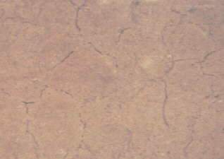
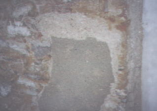

Weitere Datenübertragung Ihres Webseitenbesuchs an Google durch ein Opt-Out-Cookie stoppen - Klick!
Stop transferring your visit data to Google by a Opt-Out-Cookie - click!: Stop Google Analytics
Cookie Info. Datenschutzerklärung

 Altbau und Denkmalpflege Informationen - Startseite / Impressum
Altbau und Denkmalpflege Informationen - Startseite / Impressum
Inhaltsverzeichnis - Sitemap - über 1.500 Druckseiten unabhängige Bauinformationen
Bauberatung für Jedermann +++ Alles auf CD +++ Zur Energiesparseite mit kommentierten Bauschäden
Frechheiten zum besseren Bauen +++ Für Bauherren und Baufachleute: Tagesseminare bundesweit
Kostengünstiges Instandsetzen von Burgen, Schlössern, Herrenhäusern, Villen - Ratgeber zu Kauf, Finanzierung, Planung (PDF eBook)
Altbauten kostengünstig sanieren -
Heiße Tipps gegen Sanierpfusch im bestimmt frechsten Baubuch aller Zeiten (PDF eBook + Druckversion)

Die erhaltende Instandsetzung - Teil 1
Die erhaltende Instandsetzung - Teil 2.1
Konrad Fischer
Sparsam Planen und Bauen im Altbau
Die erhaltende Instandsetzung - Teil 2.2
Altbaugeeignete Reparaturverfahren und Alternativen zu zerstörerischen Sanierverfahren - Fortsetzung
Kunststoffvergütete Baustoffe halten im Altbau meist nicht, was
sie versprechen. Regelmäßig verursachen sie Schäden durch
vorzeitige Versprödung und Verschmutzung, übermäßige
Abdichtung und Entfeuchtungsblockade der immer flüssig (nicht dampfförmig)
im Bauteil vorhandenen Nässe.
 Erneuerte Schloßfassade,
abgedichtet mit Dispersionssilikatfarbe (Mineralfarbe) auf Sanierputz - Zustand nach einem Jahr
Erneuerte Schloßfassade,
abgedichtet mit Dispersionssilikatfarbe (Mineralfarbe) auf Sanierputz - Zustand nach einem Jahr
 Detail am gleichen Objekt
Detail am gleichen Objekt
Auch silikat-/wasserglashaltige Fassadenprodukte schädigen den Bestand durch
übermäßige Festigkeits- und Abdichtungsentwicklung ebenso wie Silikonharzfarben - ganz im Gegenteil zur Produktwerbung.
Luftkalk-Ergänzungsmörtel für Natur- und Ziegelstein, reine Ölfarben auf
Holzoberflächen (Fenster), rein mineralische, zement-,
hüttensand- und traßfreie Baustoffe mit geringem Feuchterückhaltungsvermögen
wie Luftkalkmörtel und Ziegel - handwerklich richtig eingesetzt - erfüllen ihren Dienst am Bauwerk zuverlässiger. Sie genügen
damit auch den denkmalpflegerischen Vorstellungen von anständiger
Alterungsfähigkeit - sie opfern sich für den Bestand. Wenn die
regelmäßig desolaten Kunstharzbeschichtungen früherer Anwendungen
wieder entfernt werden müssen, gefährden mechanische und thermische
Verfahren den Bestand (z.B. Malgrund, Fensterglas) oft erheblich. Mit CKW-freiem
Entlacker und Abbeizpasten gibt es schonendere und wirtschaftlichere Verfahren.
Nur die Verwendung geeigneter Baustoffe sichern die wirtschaftlichen Vorteile
einer Sanierung auch langfristig, von der Massivwand bis zum Fenster.
 Klosterfassade
in reiner Silikatfarbentechnik - scheinbar in Ordnung nach alter Väter Sitte - bonbonfarbene
opake Wasserglasfärbelung teils nach Befund des 19. Jhs. ...
Klosterfassade
in reiner Silikatfarbentechnik - scheinbar in Ordnung nach alter Väter Sitte - bonbonfarbene
opake Wasserglasfärbelung teils nach Befund des 19. Jhs. ...
...
doch bei näherer Betrachtung:  Aufplatzende
und craquelierende durch Wasserglasbehandlung überfestigte und überdichte
Putz- und Farbschollen,
Aufplatzende
und craquelierende durch Wasserglasbehandlung überfestigte und überdichte
Putz- und Farbschollen,  .
.  .
. darunter
mehlende aufgefrorene Originalkalkmörtel->..
darunter
mehlende aufgefrorene Originalkalkmörtel->..
Deswegen: Abnahme der zerstörten Schollen und mehlenden Altputze bis auf tragfähigen Grund:

Originaler Unterputz, teils zwar mit Schwundrissen durchzogen und hohlklingend oder Restflächen
mürber graugefärbter Sichtputzfragmente ...

...dennoch zur Wiederverwendung geeignet als Untergrund für neuen
Putzaufbau mit Luftkalkmörtel, nach Erstbefund gestrichen mit Fresko-Kalkfarbe/Kalktünche in tagwerksgerechter Freskotechnik:
 Preisgünstig
reparierte Luftkalkmörtel-Fassade nach vierjähriger
(1995-1999) Standzeit im rauhen oberpfälzischen Mittelgebirgsklima.
Vergabe aller Arbeiten nach unbeschränkter öffentlicher Ausschreibung
gem. VOB im Positionsbausteinsystem.
Preisgünstig
reparierte Luftkalkmörtel-Fassade nach vierjähriger
(1995-1999) Standzeit im rauhen oberpfälzischen Mittelgebirgsklima.
Vergabe aller Arbeiten nach unbeschränkter öffentlicher Ausschreibung
gem. VOB im Positionsbausteinsystem.
 Fassadendetail mit reicher Architekturgliederung und gestaltenden Putzstrukturen nach
4 Jahren Standzeit. Fazit: Es geht auch ohne puren Sílkatanstrich oder gar trocknungsblockierende
Silikat-Dispersionsfarbe, die unverschämterweise unter dem Tarnbegriff "Mineralfarbe" in den Handel gelangt.
Fassadendetail mit reicher Architekturgliederung und gestaltenden Putzstrukturen nach
4 Jahren Standzeit. Fazit: Es geht auch ohne puren Sílkatanstrich oder gar trocknungsblockierende
Silikat-Dispersionsfarbe, die unverschämterweise unter dem Tarnbegriff "Mineralfarbe" in den Handel gelangt.
Die erhaltende Instandsetzung - Teil 3 und Schluß
Altbau und Denkmalpflege Informationen Startseite